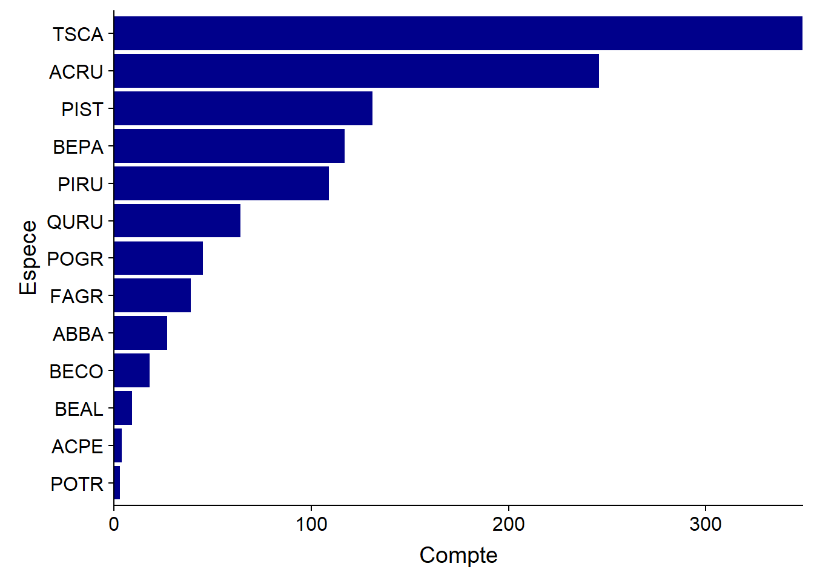
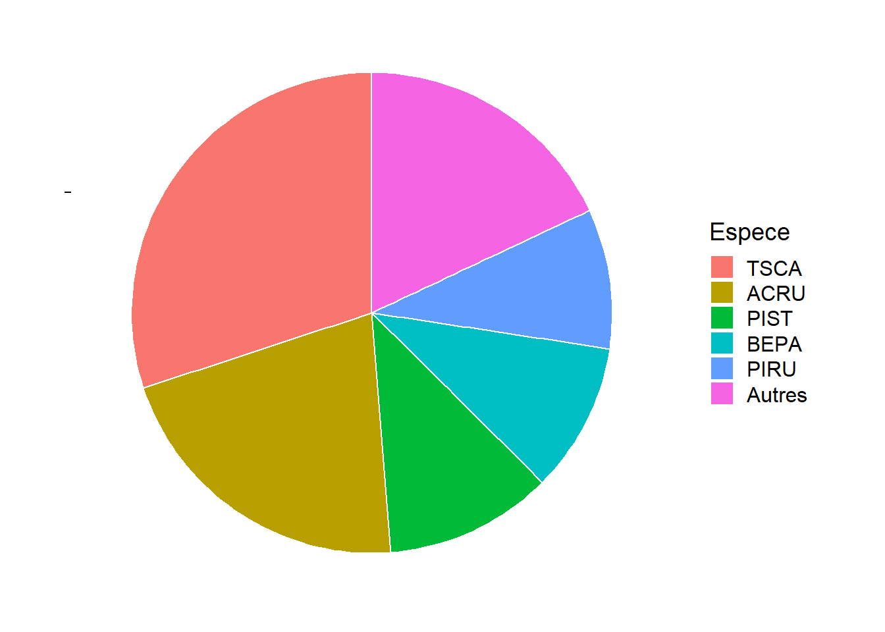
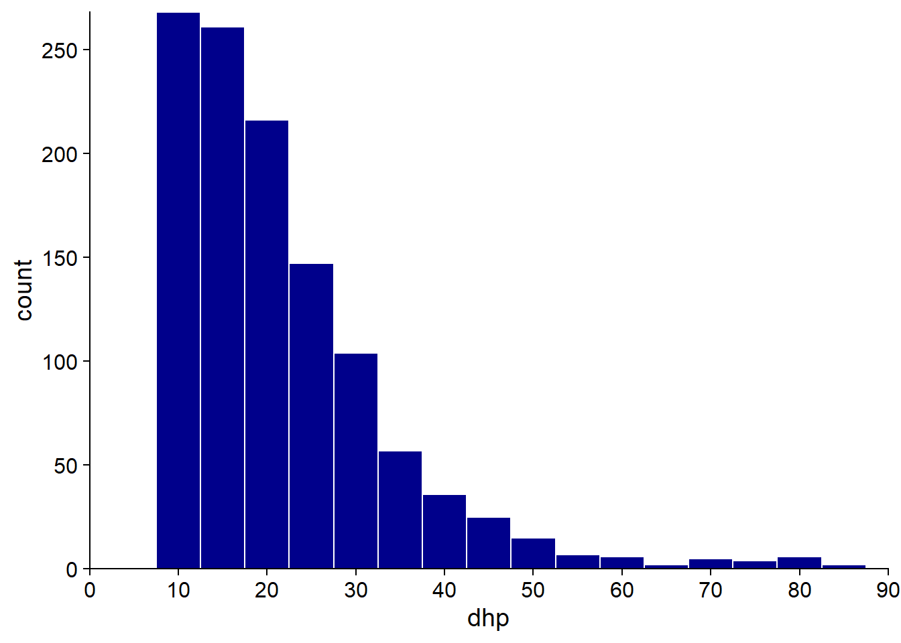
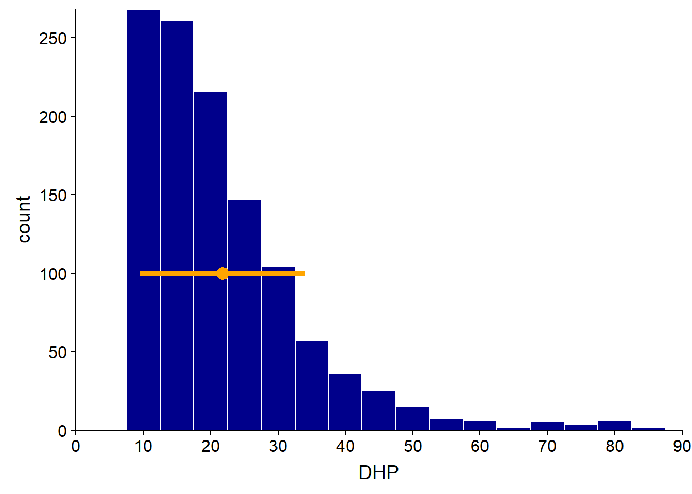
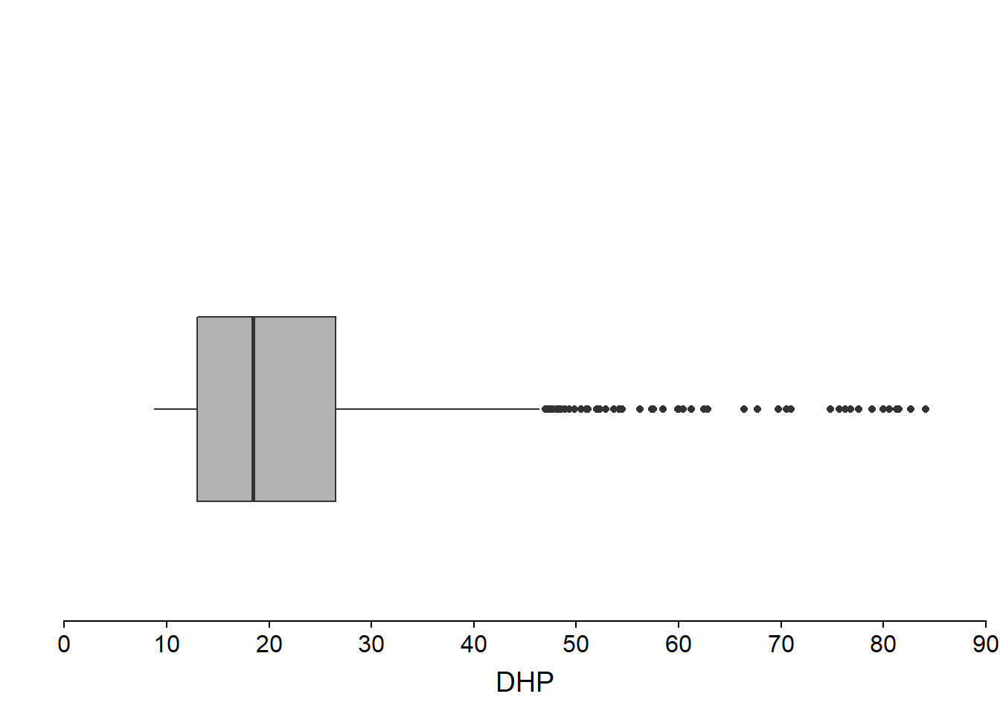
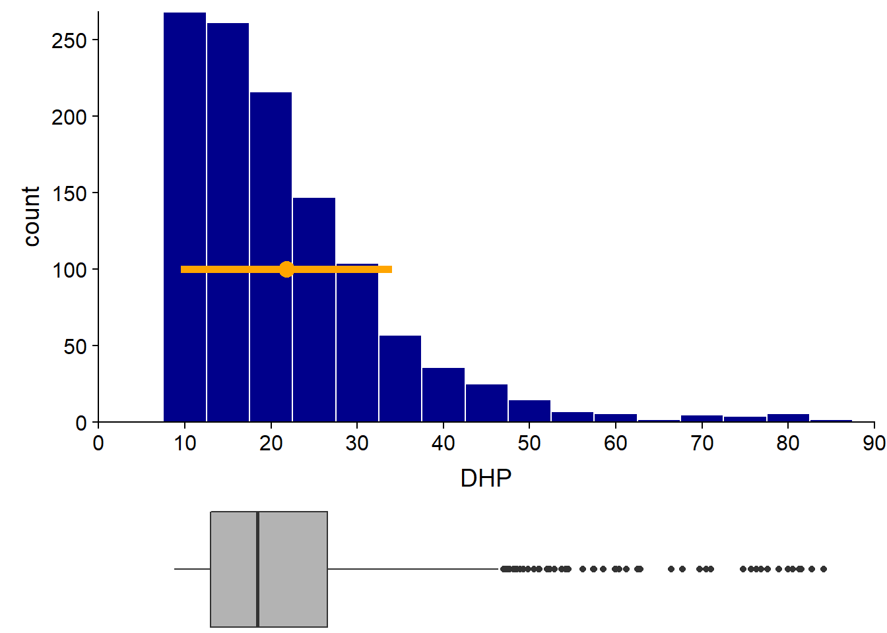
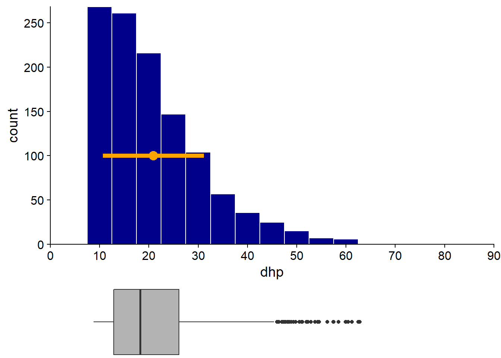
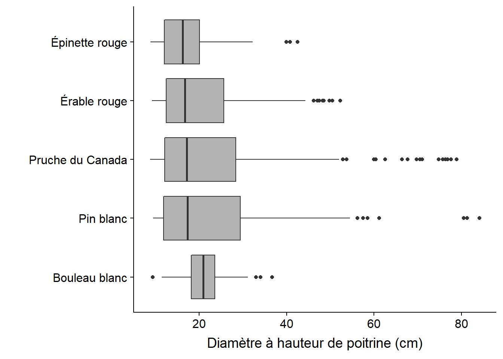
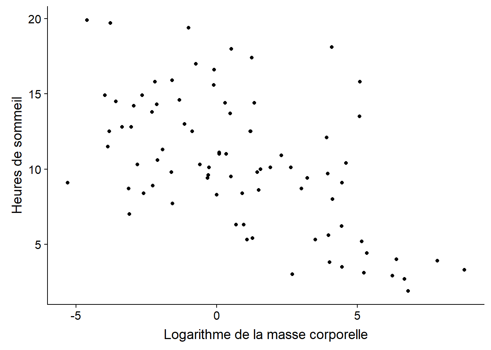

Statistiques descriptives et représentations graphiques
30 août 2021
Objectifs
Décrire le rôle des statistiques dans la méthode scientifique.
Connaître les types de données couramment utilisés en statistiques.
Choisir des statistiques sommaires et des représentations graphiques appropriées pour différentes questions et différents types de données.
Rôle des statistiques
Quels types de questions font appel aux statistiques?
Les méthodes statistiques qui seront présentées dans ce cours sont utilisées dans l’ensemble des sciences naturelles et sociales. Il existe toutefois plusieurs raisons pour lesquelles ces méthodes occupent une place prépondérante dans certaines disciplines, comme l’écologie.
Nous étudions des systèmes complexes, composés de nombreux types d’entités ou d’individus qui interagissent. Un changement donné peut engendrer une chaîne d’effets, des boucles de rétroaction, etc. Isoler l’effet d’une variable représente donc un défi important.
Les individus ne sont pas identiques mais varient à plusieurs niveaux.
Notre capacité d’observation du système est limitée, tant pour le nombre de variables mesurées, que le nombre d’individus échantillonnées, ainsi que par la précision des observations elles-mêmes.
La méthode scientifique
La méthode scientifique est souvent présentée par un diagramme comme celui ci-dessous. Sur la base d’observations passées, des chercheurs émettent une hypothèse sur le fonctionnement d’un système. De cette hypothèse, on déduit certaines prédictions, qui sont comparées au résultat d’une expérience conçue spécifiquement pour tester l’hypothèse. Le résultat mène soit au rejet de l’hypothèse, soit à son acceptation provisoire (jusqu’à ce qu’une hypothèse compétitrice soit proposée sur la base de nouvelles observations ou résultats d’expérience).

En réalité, chaque étude scientifique ne suit pas ce schéma en entier. Différentes équipes peuvent réaliser les nouvelles observations, formuler de nouvelles théories ou hypothèses et concevoir les expériences visant à tester ces hypothèses. Pour certains systèmes, il n’est pas éthique ou pratique de réaliser des expériences contrôlées, donc les hypothèses doivent être testées à partir d’observations.
Il existe aussi plusieurs questions d’intérêt scientifique qui ne sont pas des tests d’hypothèse. Par exemple:
Combien y a-t-il d’espèces d’oiseaux uniques à cette région?
Quelle est l’aire de répartition du pin gris? Comment sera-t-elle modifiée par les changements climatiques au 21e siècle?
Rôle des statistiques
Les quatre buts suivants résument la plupart des applications des statistiques:
Décrire les caractéristiques sommaires d’un ensemble de données.
À partir de mesures prises sur un échantillon d’individus, estimer les caractéristiques d’une variable, ou d’une relation entre variables, au niveau de la population.
Tester une hypothèse portant sur ces variables ou relations entre variables.
Prédire la valeur d’une variable pour un nouvel individu hors de l’échantillon.
Exemples
Quel est le diamètre moyen des arbres mesurés dans une parcelle? (description, puisqu’on a la mesure pour tous les arbres)
Combien y a-t-il d’orignaux dans le Parc de la Vérendrye? (estimation, puisqu’on ne les a pas tous observés)
- La population est-elle en croissance par rapport à l’année précédente? (test d’hypothèse)
- Quelle sera la population dans 10 ans? (prédiction)
Les trois dernières tâches (estimation, test d’hypothèse et prédiction) demandent de généraliser les connaissances acquises à partir d’un nombre limité d’observations. Nous en discuterons davantage dans les prochains cours; pour l’instant, nous nous concentrons sur les statistiques descriptives.
Types de données
Jeu de données
Pour cette leçon, nous utiliserons un jeu de données provenant de l’inventaire des arbres sur des parcelles de 20m x 20m au Parc national de Kejimkujik, en Nouvelle-Écosse. Ces données sont disponibles librement sur le portail des données ouvertes du gouvernement du Canada.
Voici un aperçu des données. Ici, num_arbre est le numéro d’identification de l’arbre, nb_tiges est le nombre de tiges et dhp est le diamètre à hauteur de poitrine (en cm).
## site parcelle jour mois annee num_arbre nb_tiges espece dhp
## 1 BD A 31 8 2004 1 1 TSCA 16.3
## 2 BD A 31 8 2004 2 1 TSCA 24.0
## 3 BD A 31 8 2004 6 1 TSCA 29.8
## 4 BD A 31 8 2004 7 1 ACRU 29.0
## 5 BD A 31 8 2004 8 1 TSCA 15.5
## 6 BD A 31 8 2004 9 1 TSCA 32.0Nous distinguerons quatre types de données, divisés en deux groupes: variables numériques et variables catégorielles (parfois appelées qualitatives):
Les variables numériques continues ont un nombre infini de valeurs possibles (théoriquement) dans un intervalle donné. Exemple: diamètre.
Les variables numériques discrètes peuvent seulement prendre certaines valeurs dans un intervalle, généralement des nombres entiers. Exemple: année, nombre de tiges.
Les variables catégorielles nominales indiquent l’appartenance à une catégorie, sans que ces catégories ne soient ordonnées. Exemple: site, espèce.
Les variables catégorielles ordinales indiquent la position sur une échelle ordonnée. Exemple: classe de drainage (xérique, mésique, hydrique), stade de vie (semis, gaule, arbre mature).
Les variables catégorielles ordinales sont parfois représentées par des nombres. Toutefois, les niveaux d’une variable catégorielle ne sont pas des quantités et la distance entre deux niveaux n’est pas définie de façon numérique.
Visualiser la distribution d’une variable catégorielle
Un graphique à barres est souvent utilisé pour visualiser le nombre d’observations dans chaque catégorie; dans notre exemple, le nombre d’arbres par espèce.

Pour mettre l’accent sur les proportions des observations par catégorie, on utilise parfois un graphique circulaire (pie chart).

En général, les graphiques circulaires sont déconseillés. Ils deviennent difficiles à lire lorsque le nombre de catégories agumente. Aussi, il est plus facile visuellement d’estimer une longueur qu’une surface; autrement dit, on peut mieux comparer les grandeurs lorsqu’elles sont représentées sur une dimension (comme dans le graphique à barres) que sur deux dimensions.
Cela dit, le graphique circulaire peut être utile lorsqu’on veut comparer les proportions à des fractions simples comme 1/2 ou 1/4. Par exemple, on voit ici que plus de 50% des arbres font partie des deux espèces les plus communes, TSCA (pruche du Canada) et ACRU (érable rouge).
Pour une variable nominale, les catégories n’ont pas d’ordre fixe. En les ordonnant d’après leur fréquence, comme on l’a fait ici, on simplifie la lecture du graphique. Pour une variable ordinale, il faut bien sûr respecter l’ordre des valeurs de la variable.
Visualiser la distribution d’une variable numérique continue
Un histogramme est obtenu en comptant le nombre d’observations dans des intervalles de taille égale sur l’axe de la variable observée. Ci-dessous, l’histogramme du DHP montre clairement l’asymétrie de la distribution (plusieurs arbres de petit diamètre et de rares arbres avec un très grand diamètre). On remarque aussi que l’inventaire comporte un DHP minimum autour de 10 cm.

L’approximation de la distribution par un histogramme dépend du choix de la taille de l’intervalle (bin width en anglais), donc il est utile de tester plusieurs valeurs. Avec des intervalles trop grands, on perd de l’information sur les variation de fréquence à petite échelle; avec des intervalles trop petits, on obtient une distribution trop irrégulière par manque de données dans chaque intervalle.
Le graphique de densité utilise quant à lui une méthode d’estimation par noyau (kernel density estimation) pour approximer la distribution de probabilité continue à partir des observations. Comme pour l’histogramme, le graphique de densité comprend un paramètre qui détermine la résolution du graphique sur l’axe des x, allant d’une distribution plus lisse à une plus irrégulière.

Statistiques sommaires d’une variable numérique
Moyenne, variance et écart-type
Prenons une série de données \(x_1\), \(x_2\), …, \(x_n\) provenant de \(n\) observations d’une variable numérique \(x\).
La moyenne de \(x\) est notée \(\bar{x}\) et définie comme:
\[\bar{x} = \frac{x_1 + x_2 + ... + x_n}{n} = \frac{\sum_{i = 1}^{n} x_i}{n}\]
La moyenne constitue en quelque sorte le “centre de gravité” d’une distribution: si chaque observation exerçait un poids proportionnel à sa distance de la moyenne, ces poids seraient en équilibre.

Par cette définition, si on soustrait \(\bar{x}\) de chaque observation pour obtenir son écart à la moyenne, la somme de ces écarts est égale à zéro.

Pour mesurer le degré de dispersion des données autour de leur moyenne, on prend le carré des écarts à la moyenne. La moyenne de ces écarts au carré se nomme la variance, notée \(\sigma_x^2\).
\[\sigma_x^2 = \frac{\sum_{i = 1}^{n} (x_i - \bar{x})^2}{n}\]
L’unité de mesure de la variance diffère de celle des données (ex.: pour un diamètre en cm, la variance est en cm\(^2\)). Pour cette raison, il est utile de rapporter non pas la variance comme telle, mais plutôt sa racine carrée, ou écart-type (\(\sigma_x\))
\[\sigma_x = \sqrt{\frac{\sum_{i = 1}^{n} (x_i - \bar{x})^2}{n}}\]
Note: Ici, nous utilisons la moyenne et la variance pour décrire une série de données, sans référence à un modèle statistique ou à une population plus grande. Comme nous verrons au prochain cours, lorsqu’on souhaite estimer la variance ou l’écart-type d’une population à partir d’un échantillon, la division par \(n\) est remplacée par une division par \(n - 1\).
Comme la moyenne et l’écart-type ont les mêmes unités, on peut calculer leur ratio pour obtenir une mesure de la dispersion relative des données. Ce ratio est nommé coefficient de variation (CV) et s’exprime généralement en pourcentage.
Dans notre jeu de données, l’ensemble des arbres a un DHP moyen de 21.8 cm, avec un écart-type de 12.3 cm (CV de 56%). Nous ajoutons un point à l’histogramme pour représenter la moyenne et une ligne correspondant à un écart-type de chaque côté de la moyenne. Notez que si la moyenne et l’écart-type donnent une certaine idée de la distribution des valeurs, d’autres informations telles que l’asymétrie de la distribution sont perdues.

Statistiques de rang
D’autres statistiques sommaires courantes sont basées sur le rang des observations, lorsque celles-ci sont classées en ordre croissant. Celles-ci incluent:
le minimum et le maximum;
la médiane: définie comme l’observation de rang central, ou pour un nombre pair de données, la moyenne des deux observations centrales;
les quantiles.
Les quantiles peuvent être vus comme une généralisation de la médiane. Si la médiane divise les données en deux groupes contenant le même nombre d’observations, d’autres types de quantiles divisent les données en plus de deux groupes. Les types de quantiles les plus utilisés sont les quartiles (4 groupes), quintiles (5 groupes), déciles (10 groupes) ou centiles (100 groupes).
En particulier, les quartiles servent à définir un graphique nommé boîte à moustaches (boxplot).
Boîte à moustaches
Popularisé par Tukey, ce graphique permet de visualiser la position des quartiles (incluant la médiane). La boîte située entre le 1er et le 3e quartile représente la région contenant 50% des observations. La distance entre le 1er et le 3e quartile se nomme l’écart interquartile (ou IQR pour interquartile range). Une moustache montre l’étendue des données de chaque côté de la boîte.

Souvent, la longueur maximale de chaque moustache est déterminée par l’écart interquartile (1.5 fois l’IQR, selon la convention de Tukey). Les valeurs extrêmes au-delà de cette limite sont représentées par des points.

En juxtaposant l’histogramme du DHP et la boîte à moustaches, on voit que cette dernière représente bien les caractéristiques essentielles de la distribution, incluant l’asymétrie, le DHP minimal et la présence de quelques très grands arbres.

Par rapport à la moyenne et l’écart-type, les statistiques basées sur les quantiles sont moins sensibles aux valeurs extrêmes. Voyons ce qu’il arrive si nous supprimons les données des 18 arbres (sur plus de 1100) avec un DHP supérieur à 65 cm.

L’exclusion de ces quelques grands arbres affecte davantage la moyenne (diminution de 4%) et l’écart-type (diminution de 16%) que la médiane (diminution de 1%) et l’écart interquartile (diminution de 2%). Rappelons-nous que le poids d’une observation sur la moyenne dépend de sa distance à cette dernière. Comparativement, la médiane dépend seulement du nombre d’observations plus petites ou plus grandes, mais pas de leur distance.
Si la boîte à moustaches représente une distribution de manière très simplifiée, cette simplicité peut représenter un avantage lorsqu’on souhaite visualiser de nombreuses distributions côte-à-côte. Par exemple, nous illustrons ci-dessous la distribution du DHP des principales espèces d’arbres à Kejimkujik. On remarque tout de suite que le DHP des bouleaux blancs est moins variable et distribué plus symétriquement que celui des autres espèces.

Résumé: Statistiques d’une variable
Variables numériques
Visualiser la distribution: boîte à moustaches, histogramme, graphique de densité
Mesures de tendance centrale: médiane, moyenne
Mesures de dispersion: étendue (max - min), écart interquartile, écart-type
Pour des séries de données à différentes échelles, on peut comparer la dispersion relative en calculant le coefficient de variation (ratio de l’écart-type sur la moyenne, souvent exprimé en %).
Variables catégorielles
Visualiser la distribution: graphique à barres.
Variable nominale: Comme tendance centrale, on peut seulement définir le mode (valeur la plus commune).
Variable ordinale: Puisque les catégories sont ordonnées, on peut aussi définir la valeur médiane.
Relation entre deux variables numériques
Pour terminer, nous discuterons des statistiques décrivant la relation entre deux variables numériques. Cette relation peut être visualisée à l’aide d’un nuage de points.
Par exemple, voici un graphique du nombre d’heures de sommeil de 83 espèces de mammifères en fonction de leur masse corporelle. Le jeu de données provient d’une étude de Savage et West (2004) et est inclus avec le package ggplot2 dans R.

À première vue, il semble y avoir une tendance à dormir moins longtemps chez les plus grands mammifères.
Covariance et corrélation
Prenons deux variables \(x\) et \(y\) mesurées sur les mêmes unités d’observation. Rappelons-nous que la variance correspond à la moyenne du carré des écarts à la moyenne d’une variable.
\[\sigma_x^2 = \frac{\sum_{i = 1}^{n} (x_i - \bar{x})^2}{n}\]
La covariance, quant à elle, est la moyenne du produit des écarts de \(x\) et \(y\) à leur moyenne respective.
\[\sigma_{xy} = \frac{\sum_{i = 1}^{n} (x_i - \bar{x}) (y_i - \bar{y})}{n}\]
Lorsque les variables tendent à être simultanément au-dessus (ou sous) leur moyenne, les écarts sont plus souvent du même signe, donc la covariance est positive. Lorsque les écarts tendent à être de signe opposé, la covariance est négative.
Il est possible de démontrer que la valeur absolue maximale de la covariance est égale au produit des écarts-type des deux variables. En divisant la covariance par le produit des écart-types, on obtient donc une valeur normalisée dans l’intervalle de -1 à 1. Cette valeur est le coefficient de corrélation de Pearson, \(\rho_{xy}\).
\[\rho_{xy} = \frac{\sigma_{xy}}{\sigma_x \sigma_y}\]
Le coefficient de corrélation de Pearson mesure l’association linéaire entre deux variables. Un coefficient de 1 (respectivement, -1) correspond à une corrélation positive (resp., négative) parfaite. Un coefficient de 0 indique l’absence de corrélation. Pour notre exemple précédent (heures de sommeil vs. logarithme de la masse corporelle), \(\rho_{xy}\) = -0.57.
Si deux variables sont indépendantes, c’est-à-dire que connaître l’une d’elle n’apporte aucune information sur l’autre, leur corrélation est nécessairement égale à zéro. Toutefois, comme le montre l’image ci-dessous, l’inverse n’est pas nécessairement le cas.
 Source: Wikipédia
Source: Wikipédia
Cette figure indique les coefficients de corrélation associés à différents nuages de points. La première rangée montre la progression entre deux variables indépendantes (au centre) vers des associations positives et négatives de plus en plus fortes. La deuxième rangée montre que le coefficient de corrélation ne dépend pas de la pente d’une relation linéaire entre deux variables. La troisième rangée donne plusieurs exemples où la corrélation linéaire est de zéro, même s’il existe des patrons d’association (non-linéaires) entre les deux variables.
Analyse initiale des données
Il est toujours utile de réaliser une exploration initiale des données avant de passer à l’étape de modélisation. Le but de cette analyse initiale est de se familiariser avec le jeu de données et identifier ses particularités ou possibles anomalies. Voici quelques suggestions de points à vérifier.
Pour les variables catégorielles:
- Combien de catégories y a-t-il?
- Certaines catégories sont-elles très rares?
Pour les variables numériques:
- Quelle est l’étendue des valeurs?
- La distribution est-elle fortement asymétrique?
- Y a-t-il des valeurs extrêmes?
Pour tous les types de variables:
- Y a-t-il des valeurs manquantes et combien?
- Y a-t-il des valeurs implausibles qui pourraient être des erreurs?
Références
Pour une discussion plus approfondie des différentes méthodes et meilleures pratiques pour la construction de graphiques, je recommande les livres électroniques suivants:
Healy, K. Data Visualization: A practical introduction. https://socviz.co/ (aussi disponible en format papier à la bibliothèque de l’UQAT)
Wilke, C.O. Fundamentals of Data Visualization. https://clauswilke.com/dataviz/